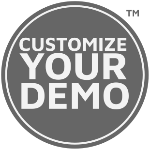

Integritetsskyddspolicy Fastforce AB
Integritet och dataskydd är viktigt för oss på Fastforce AB (“Fastforce”). Du ska känna dig trygg när du lämnar dina uppgifter till oss. Vi behandlar dina personuppgifter enligt Europaparlamentets och rådets förordning (EU) 2016/679 av den 27 april 2016 om skydd för fysiska personer med avseende på behandling av personuppgifter och om det fria flödet av sådana uppgifter och om upphävande av direktiv 95/46/EG, Dataskyddsförordningen, och tillämplig nationell lagstiftning.
Denna integritetsskyddspolicy gäller för alla som på något sätt nyttjar Fastforce:s tjänster eller produkter och/eller på annat sätt har kontakt med oss. I denna policy redogör Fastforce för sin personuppgiftsbehandling och för vilka rättigheter du har enligt gällande personuppgiftslagstiftning.
Om inte annat anges så är det Fastforce som har ansvaret för behandlingen av dina personuppgifter. Du är alltid välkommen att kontakta oss vid eventuella frågor kring denna policy eller andra frågor relaterade till dataskydd.
1. Vad är en personuppgift?
En personuppgift är information som direkt eller indirekt kan hänföras till en levande fysisk person. Exempel på sådana uppgifter är personnummer, personliga e-postadresser, telefonnummer och dylikt, men även krypterade uppgifter kan utgöra personuppgifter om de kan kopplas till fysiska personer.
2. Vad är behandling av en personuppgift?
Med behandling avses varje handling som företas med en personuppgift. Det kan röra sig om allt från insamling och lagring, till ändring, användning eller radering.
3. När samlar vi in personuppgifter om dig?
Uppgifter som du själv lämnar till oss
Vi samlar in och behandlar personuppgifter som du själv lämnar till oss när du exempelvis använder våra tjänster och deltar i våra evenemang, kontaktar oss eller använder våra digitala kanaler.
Uppgifter från andra källor
Vi kan samla in och behandla personuppgifter som delas med oss av våra samarbetspartners och uppdragsgivare. I många av de fallen är vi personuppgiftsbiträden och utför behandlingen enligt uppdragsgivarens instruktioner.
Vi kan också komma att använda tredje parts tjänster för att samla in och uppdatera dina personuppgifter.
4. Varför behandlar vi dina personuppgifter?
Vi behandlar dina personuppgifter för att kunna tillhandahålla våra tjänster.
I huvudsak behandlar vi dina personuppgifter för att:
- Administrera och tillhandahålla våra tjänster
- Hantera kommunikation med kunder och intressenter
- Förbättra våra tjänster genom att undersöka marknaden och dess behov
5. Vad har vi för laglig grund för behandlingen av dina personuppgifter?
För att få behandla dina personuppgifter måste vi ha en laglig grund för detta. Fastforce AB behandlar dina personuppgifter på följande grunder:
- Då personuppgiftsbehandlingen är nödvändig för att vi ska kunna fullgöra ett avtal som vi har med dig eller din arbetsgivare.
- Då personuppgiftsbehandlingen är nödvändig för att fullgöra en rättslig förpliktelse.
- Då vi har ett berättigat intresse av att behandla dina personuppgifter.
- Då du har lämnat samtycke till behandlingen.
6. Hur länge sparar vi dina uppgifter?
Dina personuppgifter behandlas endast så länge som det är nödvändigt för de ändamål de samlats in för - exempelvis så länge det krävs för att vi ska kunna fullfölja de skyldigheter som vi har med anledning av ett avtal med dig. Vi kan komma att spara uppgifterna längre om det krävs enligt lag eller för att bevaka våra rättsliga intressen, t.ex. om det pågår en juridisk process.
Dina personuppgifter raderas eller anonymiseras när de inte längre är relevanta för de ändamål som de har samlats in för.
7. Vilka kan vi dela dina uppgifter med?
Personuppgifter som samlas in av, eller som du delar med Fastforce kan komma att delas med våra samarbetspartners. Vi kan dela dina personuppgifter med partners som tillhandahåller tjänster som du kan ha nytta av. Det bolag som mottar uppgifterna är ensamt personuppgiftsansvarig för den personuppgiftsbehandling det utför för dessa ändamål.
I egenskap av personuppgiftsbiträde kan vi komma att dela dina uppgifter med vår uppdragsgivare för att kunna fullgöra de skyldigheter som följer av förevarande personuppgiftsbiträdesavtal.
Vi kan även komma att dela dina personuppgifter om det är nödvändigt för att fastställa, göra gällande och utöva Fastforce rättsliga intressen.
Vi kan också komma att dela dina personuppgifter när så krävs till följd av lag eller myndighetsföreskrift.
8. Var behandlas dina uppgifter?
Dina personuppgifter behandlas inom EU/EES. För det fall att vi använder oss av tjänsteleverantörer som överför dina personuppgifter till länder utanför EU och EES kommer vi att vidta åtgärder för att skydda dina personuppgifter i enlighet med tillämpliga lagkrav, exempelvis genom att kräva garantier om att leverantören skyddar uppgifterna i enlighet med gällande dataskyddsregler. Om du vill veta mer om vilka skyddsåtgärder vi vidtagit kan du kontakta oss.
9. Dina rättigheter
Rättelse och tillgång till dina uppgifter
När vi behandlar dina personuppgifter har du när som helst rätt att begära rättelse av felaktiga uppgifter eller ändra de uppgifter som du lämnat.
Du har också rätt att begära ett så kallat registerutdrag för att få reda på vilka personuppgifter vi har registrerade om dig.
Återkalla samtycke med framtida verkan
Om vi behandlar dina personuppgifter på den lagliga grunden samtycke har du rätt att när som helst återkalla ditt samtycke avseende framtida behandling.
Motsätta dig behandling
Du har rätt att motsätta dig behandling som vi utför på den lagliga grunden intresseavvägning.
Radering
Under vissa omständigheter har du rätt att få dina personuppgifter raderade hos oss. Detta gäller dock inte om vi exempelvis är skyldiga enligt lag att bevara uppgifterna.
Begränsa behandling
Du kan även ha rätt att begära att behandlingen av dina personuppgifter begränsas när så är möjligt. Om du begär sådan begränsning av behandlingen kan det dock leda till att vi inte kan uppfylla våra åtaganden mot dig under tiden som begränsningen pågår.
Dataportabilitet
Om du vill flytta de personuppgifter som du själv har delat med oss till någon annan så har du även rätt att få en kopia av de personuppgifter som rör dig i ett strukturerat, maskinläsbart format.
Rätt att lämna klagomål
Om du är missnöjd över sättet vi behandlar dina personuppgifter ber vi dig att kontakta oss på peder.linder@customizeyourdemo.com
Du har också rätt att vända dig med eventuella klagomål till Datainspektionen.
10. Kontaktuppgifter till personuppgiftsansvarig
Fastforce AB
Sandhamnsgatan 75G
115 28 Stockholm
11. Ändringar i integritetsskyddspolicyn
Vi förbehåller oss rätten att göra ändringar i vår integritetsskyddspolicy. Du hittar alltid den senaste versionen på webbplatsen. Vid ändringar som är av avgörande betydelse för vår behandling av personuppgifter kommer detta att kommuniceras till dig.